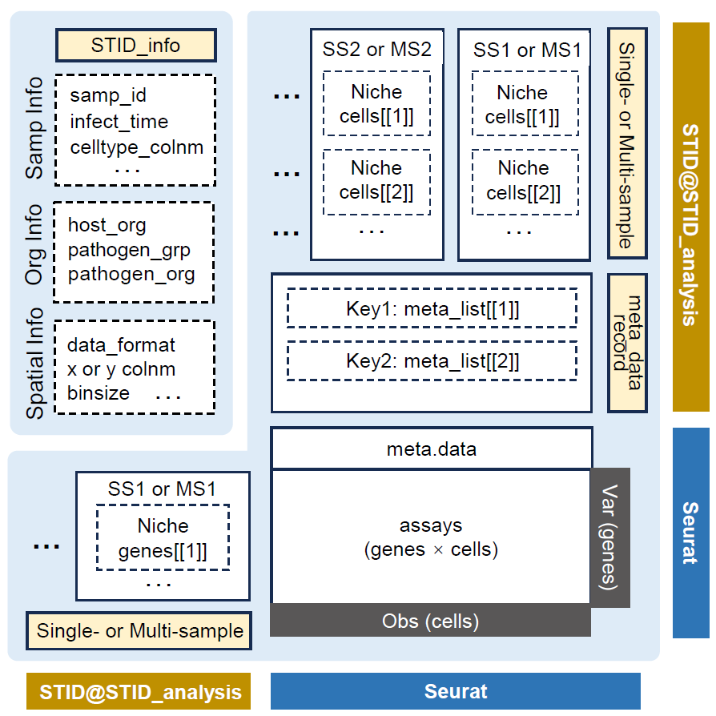
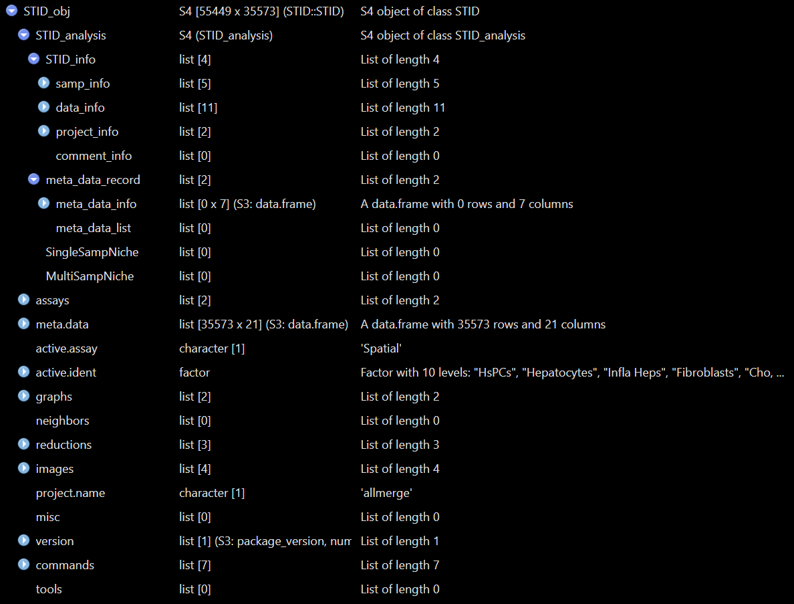
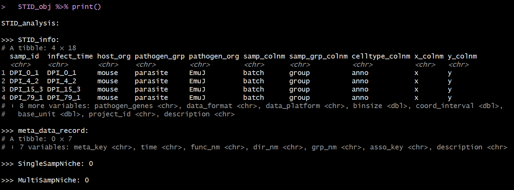

Overview
This vignette describes how to load and preprocess spatial
transcriptomics data before constructing an STID object for
downstream infection-aware spatial analysis.
Preprocessing standardizes the input object so that the data are normalized, dimensionally reduced, clustered, and annotated in a format compatible with downstream STID modules.
This vignette covers:
- loading an example Seurat object;
- running a Seurat-based preprocessing workflow;
- annotating spatial spots or cells with a reference-based method;
- converting a processed Seurat object into an
STIDobject.
Note: Update the example dataset name, organism information, pathogen gene prefix, and metadata column names according to the dataset used in your analysis.
Prerequisites
SingleR and celldex are only required for
the optional reference-based annotation step.
Example data
The example data can be downloaded from Figshare. In
this vignette, we use the stRNA_AE dataset as an
example.
Note: Replace
./stRNA_AE.rdswith the correct local path or a package-provided example dataset.
stRNA <- readRDS(file = "./stRNA_AE.rds")
stRNA <- suppressMessages(UpdateSeuratObject(stRNA))
# stRNA <- NormalizeData(stRNA)
meta_data <- stRNA@meta.data
table(meta_data$batch)If the input Seurat object already contains reliable clustering
results and cell-type annotations, you can skip the
Seurat_pipeline() and anno_SingleR() sections
and convert the object directly into an STID object.
Note: Confirm that the metadata column used for sample identity, such as
batch, exists instRNA@meta.data.
Seurat preprocessing pipeline
This step is optional. Skip it if the input Seurat object has already been normalized, dimensionally reduced, and clustered.
STID provides the wrapper function Seurat_pipeline() to
streamline Seurat-based preprocessing, including normalization, feature
selection, dimensionality reduction, and clustering.
stRNA <- Seurat_pipeline(
seurat_obj = stRNA,
data_type = "stRNA",
resolution_index = seq(0.1, 1.3, 0.2),
runTSNE_index = FALSE,
assay_nm = NULL
)Details
The preprocessing pipeline performs:
- data normalization and scaling;
- identification of highly variable features;
- principal component analysis (PCA);
- graph-based clustering across multiple resolutions.
The resolution_index argument controls clustering
granularity. Adjust this parameter according to the expected spatial
complexity and biological heterogeneity of the dataset.
Note: Update
data_type,resolution_index,runTSNE_index, andassay_nmwhen applying this workflow to other platforms or assay structures.
Cell-type annotation using SingleR
This step is optional. Skip it if cell-type annotations are already available in the Seurat metadata.
Reference-based annotation can help interpret spatial spots or cells by mapping query profiles to a reference dataset with known cell-type labels.
# library(SingleR)
# library(celldex)
# ref <- celldex::MouseRNAseqData()
stRNA <- anno_SingleR(
seurat_obj = stRNA,
ref_obj = ref,
seurat_colnm = "seurat_clusters",
ref_colnm = "label.main"
)Details
The anno_SingleR() function annotates query spots or
cells using the SingleR framework.
Key arguments include:
-
ref_obj: a reference dataset with known cell-type annotations; -
seurat_colnm: the metadata column containing cluster labels in the query Seurat object; -
ref_colnm: the annotation column in the reference dataset.
The resulting annotations are stored in the Seurat object and can be used for:
- interpreting infection-associated spatial niches;
- comparing host cell-type composition across samples or groups;
- downstream niche-level analysis in STID.
Note: Replace
MouseRNAseqData()with a reference dataset that matches the species, tissue, and experimental context of the query data. Also confirm thatseurat_colnmandref_colnmexist in the corresponding objects.
Convert the Seurat object into an STID object
To support infection-aware spatial transcriptomics analysis, STID uses a dedicated object class that stores sample information, host-cell annotations, pathogen metadata, and platform-specific spatial information.
Before conversion, confirm the following information:
- the sample identifier column;
- the sample group column;
- the cell-type annotation column;
- the host organism;
- the pathogen group and organism;
- the pathogen gene list;
- the spatial bin size, data format, and platform.
pathogen_genes <- grep("^EmuJ-", rownames(stRNA), value = TRUE)
STID_obj <- as.STID(
stRNA,
samp_colnm = "batch",
samp_grp_colnm = "group",
celltype_colnm = "anno",
host_org = "mouse",
pathogen_grp = "parasite",
pathogen_org = "EmuJ",
pathogen_gene = pathogen_genes,
binsize = 50,
data_format = "square_grid",
data_platform = "StereoSeq"
)
print(STID_obj)Details
The as.STID() function converts a processed Seurat
object into an STID object. The generated object is used as
the standard input for downstream STID analyses.
The example above assumes that:
-
batchstores sample identifiers; -
groupstores sample-level experimental groups; -
annostores cell-type annotations; - pathogen genes are identified by the prefix
EmuJ-; - the spatial data were generated using the Stereo-seq platform and represented as a square grid.
Note: These assumptions are dataset-specific. Update
samp_colnm,samp_grp_colnm,celltype_colnm,host_org,pathogen_grp,pathogen_org,pathogen_gene,binsize,data_format, anddata_platformbefore using this workflow for another dataset.
Inspect the STID object
The following figure shows the structure of STID
object.

STID class structure
The following figures show example views of the generated
STID object.

Example view of the raw STID object.

Printed summary of the raw STID object.
Notes
- Use a reference dataset that matches the species and tissue context of the spatial transcriptomics data.
- Verify that all metadata columns passed to
as.STID()are present instRNA@meta.data. - Check the pathogen gene prefix carefully, because an incorrect pattern may remove pathogen-derived features from downstream analysis.
- For package vignettes, keep large example data outside the package or provide a small, lightweight example object.
Session information
sessionInfo()
#> R version 4.2.0 (2022-04-22 ucrt)
#> Platform: x86_64-w64-mingw32/x64 (64-bit)
#> Running under: Windows 10 x64 (build 22000)
#>
#> Matrix products: default
#>
#> locale:
#> [1] LC_COLLATE=Chinese (Simplified)_China.utf8
#> [2] LC_CTYPE=Chinese (Simplified)_China.utf8
#> [3] LC_MONETARY=Chinese (Simplified)_China.utf8
#> [4] LC_NUMERIC=C
#> [5] LC_TIME=Chinese (Simplified)_China.utf8
#>
#> attached base packages:
#> [1] stats graphics grDevices utils datasets methods base
#>
#> loaded via a namespace (and not attached):
#> [1] digest_0.6.35 R6_2.6.1 jsonlite_1.8.8 lifecycle_1.0.5
#> [5] evaluate_1.0.1 cachem_1.1.0 rlang_1.1.7 cli_3.6.5
#> [9] rstudioapi_0.15.0 fs_1.6.3 jquerylib_0.1.4 bslib_0.8.0
#> [13] ragg_1.3.0 rmarkdown_2.29 pkgdown_2.2.0 textshaping_0.3.6
#> [17] desc_1.4.3 tools_4.2.0 htmlwidgets_1.6.4 yaml_2.3.10
#> [21] xfun_0.49 fastmap_1.2.0 compiler_4.2.0 systemfonts_1.0.4
#> [25] htmltools_0.5.8.1 knitr_1.49 sass_0.4.9